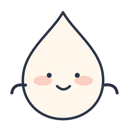

¡Hola! Vamos a jugar y a aprender sobre lactancia
Para usar en la sala de espera, en talleres o en casa. Se puede jugar solo o en equipos, desde un celular, una tablet o proyectado en una pantalla.
Material educativo del Centro de Salud N.º 61. No reemplaza la consulta con el equipo de salud: ante dolor, grietas, fiebre o dudas sobre el peso del bebé, consultar.
Juego de la Oca de la lactancia
Del nacimiento a los 6 meses. Tirá el dado y seguí el camino.
¿Cuántos jugadores?
Nombres
Reglas
- Mitos (naranja): respondé bien para quedarte; si fallás, retrocedés 2.
- Técnica (verde) y Conservación (azul): si acertás, avanzás 2.
- Sensibilización (rosa): se comparte una reflexión y avanzás 1.
- De teta a teta: una red de apoyo te hace avanzar y tirás otra vez.
- Gana quien llega primero a la meta (casillero 25). Si te pasás, rebotás hacia atrás.
Preguntados de la lactancia
Girá la ruleta, respondé la pregunta de la categoría y juntá las 4 medallas.
¿Cuántos equipos o jugadores?
Nombres
Reglas
- Cada medalla se gana con 2 respuestas correctas de esa categoría.
- Si acertás, girás de nuevo. Si fallás, pasa el turno (en modo solo, seguís jugando).
- El Comodín te deja elegir la categoría.
- Gana quien junta primero las 4 medallas.
Quiz rápido
Respondé antes de que se acabe el tiempo: cuanto más rápido, más puntos.